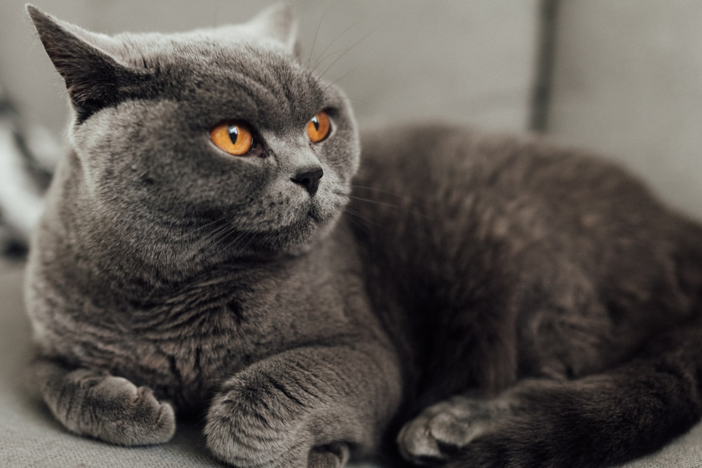

브리티시 숏헤어 키우기 완벽 가이드 — 성격·수명·질병·관리

둥근 얼굴과 통통한 볼이 매력적인 브리티시 숏헤어는 독립적이고 느긋한 성격으로 혼자 있는 시간을 잘 견뎌 1인 가구에 특히 잘 맞습니다. 대신 비만과 심장·신장 유전병에 신경 써야 하는 품종이에요. 성격부터 질병, 관리까지 정리했습니다.
한눈에 보는 브리티시 숏헤어
| 크기 | 중형~대형 (체중 약 4~8kg) |
|---|---|
| 수명 | 약 12~17년 |
| 털 | 단모, 촘촘한 이중모 (환모기 빗질) |
| 성격 | 독립적·느긋, 안정적 |
| 활동량 | 낮음~중간 |
| 초보자 적합도 | 높음 |
성격과 기질
브리티시 숏헤어를 처음 겪는 사람들이 공통으로 하는 말이 "반응이 한 박자 느리다"는 것입니다. 새 물건을 들여놓거나 낯선 사람이 오면 도망치지도, 달려들지도 않고 몇 걸음 떨어진 곳에서 한참을 지켜봅니다. 그러다 별일 없다고 판단되면 아무 일 없었다는 듯 원래 자리로 돌아가요. 겁이 많은 게 아니라 확인하고 나서 움직이는 방식입니다.
표현하는 방식도 조용합니다. 울음소리를 자주 내지 않고, 원하는 것이 있으면 앞발로 툭툭 건드리거나 문 앞에 앉아 기다리는 식으로 알립니다. 이 신호를 놓쳐도 두 번 조르지 않고 물러나는 개체가 많으니, 평소 안 가던 자리에 앉아 있다면 한 번쯤 눈여겨보세요.
다른 동물과의 관계는 싸우지도, 어울리지도 않는 쪽에 가깝습니다. 먼저 시비를 걸지 않아 합사 자체는 무난한 편이지만, 서로 그루밍해주고 붙어 자는 사이를 기대하고 두 마리를 들이면 실망할 수 있어요. "심심할 테니 친구를 만들어주자"는 접근은 이 품종에는 잘 맞지 않습니다.
입양 전 현실 체크 (비용·공간·부재 시간)
유지비만 놓고 보면 브리티시 숏헤어는 손이 덜 가는 축에 듭니다. 단모라 미용실에 갈 일이 없어 고정 지출이 하나 통째로 빠지거든요. 대신 다른 데서 품이 듭니다.
| 항목 | 대략적인 월 비용 | 메모 |
|---|---|---|
| 사료 | 3~6만 원 | 체중 관리용 사료로 바꾸면 조금 올라갑니다 |
| 모래 | 2~3만 원 | |
| 미용 | 0원 | 발톱 정리 정도만 집에서 |
| 병원(연 비용 분할) | 2~4만 원 | 연 1회 검진 기준 |
무난한 달이면 월 7~13만 원 선입니다. 다만 유전 질환 검진을 챙기는 품종이라 심장 초음파를 받는 해에는 10~25만 원가량이 따로 나갑니다. 병원마다 편차가 크니 검진 항목과 비용을 미리 확인해두면 계획 세우기가 쉽습니다.
공간보다 중요한 건 바닥과 청소
활동량이 낮고 높은 데로 뛰어오르는 걸 즐기지 않아 원룸에서도 충분히 잘 지냅니다. 천장까지 닿는 캣타워보다 창밖이 보이는 낮은 자리 하나가 더 사랑받아요. 대신 각오할 것은 털입니다. 짧고 뻣뻣한 털이 옷과 소파 천에 그대로 박히기 때문에, 돌돌이와 청소기 쓰는 빈도가 확실히 늘어납니다.
혼자 두는 시간에 대한 내성
이 품종의 가장 큰 장점입니다. 사람이 없는 낮 시간을 스스로 잘 보내는 편이라 하루 10시간 안팎의 부재도 무리 없이 견디는 경우가 많습니다. 다만 "혼자 잘 논다"와 "방치해도 된다"는 다릅니다. 다음 세 가지는 갖춰두세요.
- 화장실은 마리 수 +1개, 서로 떨어진 위치에
- 물그릇은 밥그릇과 떨어뜨려 두 곳 이상
- 혼자 사냥하듯 먹을 수 있는 먹이 퍼즐 하나
주의해야 할 질병
- 비대성 심근병증(HCM) — 고양이에게 가장 흔한 심장 질환이고, 브리티시 계열은 유전적 소인이 알려져 있습니다. 초기에는 겉으로 드러나는 증상이 거의 없어 심초음파로만 잡히는 경우가 많습니다.
- 다낭성 신장질환(PKD) — 유전성 신장 질환. 분양 시 부모묘 검사 이력을 확인하세요. (신부전 초기 증상)
- 비만 — 체질상 살이 잘 쪄 관절·당뇨 문제로 이어질 수 있습니다.
- 치주 질환 — 세 살 무렵부터 치석이 붙기 시작합니다. 입 냄새가 느껴질 때는 이미 잇몸까지 번진 경우가 많으니 그전에 양치를 습관으로 만들어 두세요.
- 하부요로기 질환 — 화장실 밖에 소변을 보거나 배뇨 자세를 오래 유지하는 것은 버릇이 아니라 통증 신호일 수 있습니다.
나이대별 관리 포인트
새끼 시기 (0~12개월)
브리티시 숏헤어는 3~5년에 걸쳐 서서히 몸이 완성되는 품종입니다. 그래서 한 살 무렵에는 사진에서 보던 통통한 모습과 달라 "너무 마른 것 아닌가" 싶을 수 있는데, 이때 걱정돼서 양을 늘리는 것이 나중에 비만으로 이어지는 흔한 경로입니다. 성장 속도는 품종 특성으로 두고, 급여량은 표시 기준을 지키세요.
또 하나, 이 시기의 브리티시는 너무 얌전해서 오히려 훈련이 미뤄집니다. 발톱 깎기, 이동장 들어가기, 양치, 몸 만지기를 새끼 때 익혀두지 않으면 나중에 고집이 생겼을 때 되돌리기 어렵습니다. 처음 데려온 며칠은 새끼 고양이 첫 주 체크리스트를 참고하세요.
성묘기 (1~7세)
- 중성화 직후 6개월이 분기점 — 필요 열량이 줄어드는 시기라 이때 급여량을 조정하지 않으면 1년 사이에 눈에 띄게 붑니다. (중성화 시기와 비용)
- 눈대중 대신 저울 — 계량컵은 사료 종류마다 무게가 달라 오차가 큽니다. 주방 저울로 g 단위로 재는 것이 가장 확실합니다.
- 유전 질환 검진 — 겉으로 멀쩡해 보여도 심장 이상이 조용히 진행되는 경우가 있습니다. 청진만으로는 놓칠 수 있으니, 검진 주기는 부모묘 이력과 첫 검사 결과를 바탕으로 수의사와 정하세요.
노령기 (8세 이상)
이 시기에는 관찰 포인트가 뒤집힙니다. 그동안 체중이 느는 것을 걱정했다면, 이제는 먹는 양이 그대로인데 저절로 빠지는 것이 신호입니다. 물 마시는 양과 소변량이 함께 늘었다면 신장 쪽을 확인해볼 필요가 있고 (신부전 초기 증상), 식욕은 왕성한데 살이 빠지고 부산해졌다면 갑상선 관련 검사를 받아보는 경우도 있습니다. 어느 쪽이든 집에서 판단할 문제는 아니니 혈액 검사로 확인하세요.
다부진 체형 탓에 관절에 실리는 부담도 커집니다. 창가나 소파처럼 즐겨 가던 자리로 오르기를 망설인다면 중간 발판을 놓아주고, 화장실도 턱이 낮은 쪽으로 바꿔주세요.
털빠짐과 환모기 대응
"단모종이라 털 관리는 안 해도 된다"는 기대로 데려왔다가 가장 많이 놀라는 부분입니다. 브리티시 숏헤어의 털은 짧지만 고양이 중에서도 손꼽히게 빽빽합니다. 손으로 쓸면 털이 눕지 않고 다시 서는 촘촘한 이중모라, 빠지는 절대량 자체가 적지 않아요.
도구는 짧은 털에 맞게
- 고무 브러시나 그루밍 장갑 — 평소 관리의 주력입니다. 짧은 털에는 핀이 긴 슬리커보다 이쪽이 훨씬 잘 붙어 나옵니다.
- 촘촘한 금속 콤 — 겉털 아래 속털을 꺼낼 때 씁니다.
- 속털 제거 도구 — 효과가 좋은 만큼 과하게 쓰면 피부를 자극합니다. 환모기에도 주 1회 정도로 제한하고, 같은 자리를 반복해서 긁지 마세요.
주기
평소에는 주 1~2회로 충분하지만, 봄과 가을 털갈이 철에는 매일 3~5분이 체감 차이가 큽니다. 실내 온도가 일정한 집에서는 계절 구분 없이 연중 조금씩 빠지기도 하니, 털이 눈에 띄게 날리기 시작하면 그때가 주기를 당길 때입니다. 빗질을 거른 만큼 삼키는 털이 늘어 헤어볼로 돌아옵니다.
초보자가 자주 하는 실수 4가지
- 그릇에 사료를 항상 채워두는 것 — 브리티시에게는 이 조합이 최악입니다. 먹는 걸 좋아하는데 움직임은 적어서, 자율 급식을 하면 거의 예외 없이 체중이 늡니다. 하루 필요량을 저울로 재서 두세 번에 나눠 주세요.
- 억지로 안아 올리기 — 안기는 걸 즐기지 않는다고 해서 애정이 없는 게 아닙니다. 이 품종은 같은 공간에 함께 있는 것으로 애정을 표현해요. 계속 붙잡으면 사람을 피해 다니게 되니, 다가올 때까지 기다리는 쪽이 결과적으로 훨씬 가까워집니다.
- "얌전하니 놀이는 필요 없겠지" — 먼저 놀자고 조르지 않을 뿐, 움직이는 것에 반응은 합니다. 스스로 요구하지 않기 때문에 보호자가 챙기지 않으면 운동량이 0에 수렴하고, 그게 곧 체중으로 나타납니다.
- 조용한 것을 건강하다고 읽는 것 — 원래 활동량이 적은 품종이라 기운이 없어져도 변화가 잘 안 보입니다. 아파도 티를 내지 않는 편이라 보호자가 알아챌 때는 이미 진행된 경우가 있어요. 체중과 물 마시는 양, 화장실 횟수를 대강이라도 기록해두면 변화를 훨씬 빨리 잡아낼 수 있습니다.
거리를 존중하는 교감법
브리티시 숏헤어와 잘 지내는 요령은 한 문장으로 정리됩니다. 사람이 다가가지 말고, 올 자리를 만들어 두는 것이에요. 소파에 앉아 아무것도 안 하고 있으면 어느새 옆에 와서 자리를 잡습니다. 반대로 쫓아다니며 만지려 하면 거리가 멀어집니다. 눈이 마주쳤을 때 천천히 깜빡여 주는 정도가 이 품종에게는 딱 맞는 인사예요.
학습 속도는 빠른 편이 아니지만 한번 자리 잡은 습관은 오래갑니다. 급여 시간, 놀이 시간을 정해두면 시계처럼 맞춰 나오고, 그 예측 가능함 자체를 편안해합니다. 식탐이 있는 편이라 간식을 보상으로 쓰는 훈련도 잘 통해서, 이동장에 스스로 들어가기나 발톱 깎을 때 가만히 있기 정도는 충분히 가르칠 수 있습니다.
까다로운 부분은 변화에 대한 반응입니다. 이사, 가구 재배치, 새 반려동물 같은 사건에 겉으로는 무덤덤해 보여도 식사량이나 화장실 습관으로 표가 납니다. 바꿀 일이 있다면 한꺼번에 말고 며칠에 걸쳐 나눠서 진행하고, 원래 쓰던 담요처럼 자기 냄새가 밴 물건은 세탁하지 말고 그대로 남겨두세요.
관리 포인트 (체중·놀이)
체중은 저울 숫자만 보지 말고 손으로 같이 확인하세요. 옆구리를 가볍게 쓸었을 때 갈비뼈가 만져지되 눈으로는 보이지 않고, 위에서 내려다봤을 때 허리가 살짝 들어가 있으면 적정선입니다. 브리티시는 원래 골격이 두툼하고 볼살이 있어 눈으로만 보면 거의 항상 "괜찮아 보인다"는 것이 함정이에요. 판단이 애매하면 비만도 자가진단으로 체형 기준을 맞춰보세요.
놀이는 높이보다 방향 전환으로 유도하는 편이 잘 먹힙니다. 공중으로 던지는 장난감보다 바닥에서 좌우로 빠르게 꺾이는 움직임에 반응이 좋고, 소파 뒤나 문틈처럼 가려진 곳에서 나타났다 사라지게 하면 더 오래 붙습니다. 하루 두세 차례, 한 번에 5분 남짓이면 충분해요. 대신 마무리는 반드시 잡게 해주고 간식으로 끝내세요. 끝까지 못 잡고 끝나는 일이 반복되면 다음번에는 아예 쳐다보지 않습니다.
사료 선택 기준은 고양이 사료 고르는 기준에 정리해두었고, 실내묘라도 예방접종은 빠뜨리면 안 됩니다.
이런 분께 잘 맞아요
- 혼자 있는 시간이 많은 직장인·1인 가구
- 과한 스킨십보다 적당한 거리의 반려 생활을 원하는 분
- 정량 급여로 체중을 꾸준히 관리할 수 있는 분
자주 묻는 질문 (FAQ)
Q. 1인 가구에 맞나요?
네, 독립적이라 혼자 있는 시간을 잘 견뎌 직장인 1인 가구에 특히 적합합니다. 다만 과한 스킨십은 좋아하지 않을 수 있습니다.
Q. 조심해야 할 질병이 있나요?
비대성 심근병증(HCM)과 다낭신(PKD)이 대표적입니다. 정기 심장·신장 검진과 분양 시 부모묘 검사 이력 확인을 권합니다.
Q. 살이 잘 찐다던데요?
체질상 비만이 되기 쉽습니다. 정량 급여와 규칙적인 놀이로 체중을 관리해 관절·당뇨 문제를 예방하세요.